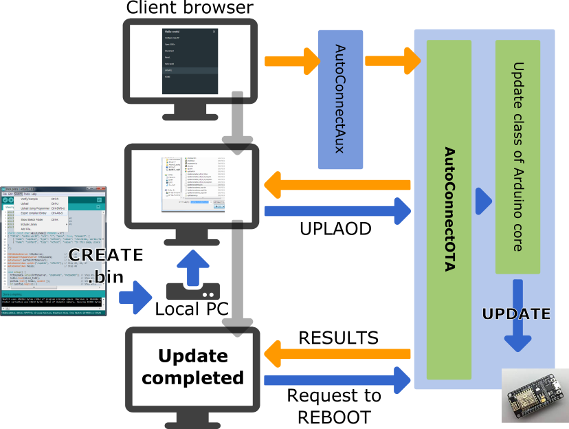
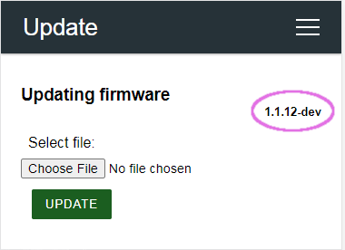

Using Web Browser
Updates with the Web Browser UPDATED w/v1.1.5¶
AutoConnect features a built-in OTA function to update ESP module firmware. You can easily make the Sketch that equips OTA and able to operate with the AutoConnect menu. As the AutoConnectOTA class, which is compliant with OTA updates using a web browser as described in the ESP8266 Arduino Core documentation.
You will be able to import the AutoConnectOTA class into your sketch just by specifying AutoConnectConfig::ota. By incorporating the AutoConnectOTA class into your Sketch, you can have an OTA updating feature which able to updating binary sketch from the AutoConnect menu.
The AutoConnectOTA feature is implemented based on the Updater class of the ESP8266 arduino core library. Its Updater class is also supported by the ESP32 Arduino core, so you can commonly import AutoConnectOTA into the Sketch without being aware of the differences between ESP8266 and ESP32 modules.

Limitation of AutoConnectOTA with authentication
AutoConnectOTA does not support authentication in v1.1.5 yet. It is planned for inclusion in AutoConnect v1.2.0, which will support HTTP authentication.
How to embed AutoConnectOTA in your sketch¶
To embed the AutoConnectOTA class into your sketch, basically follow these steps:
- Include
ESP8266WiFi.h,ESP8266WebServer.handAutoConnect.has usual.1 - Declare an ESP8266WebServer object. It's optional. (as WebServer for ESP32)
- Declare an AutoConnect object, with an argument as ESP8266WebServer if separate the declarations.
- Declare an AutoConnectConfig object.
- Declare an AutoConnectAux object for your sketch own if needed.
- Perform the following procedure steps in the
setup()function:- Set AutoConnectConfig::ota to AC_OTA_BUILTIN and configure AutoConnect.
- Load the AutoConnectAux pages declared in step #4 for your application.
- Join these pages to AutoConnect.
- Invokes AutoConnect::begin function.
- Invokes AutoConnect::handleClient function in the
loop().
#include <ESP8266WiFi.h> // Step #1
#include <ESP8266WebServer.h> // Step #1
#include <AutoConnect.h> // Step #1
ESP8266WebServer server; // Step #2
AutoConnect portal(server); // Step #3
AutoConnectConfig config; // Step #4
AutoConnectAux hello; // Step #5
static const char HELLO_PAGE[] PROGMEM = R"(
{ "title": "Hello world", "uri": "/", "menu": true, "element": [
{ "name": "caption", "type": "ACText", "value": "<h2>Hello, world</h2>", "style": "text-align:center;color:#2f4f4f;padding:10px;" },
{ "name": "content", "type": "ACText", "value": "In this page, place the custom web page handled by the Sketch application." } ]
}
)"; // Step #5
void setup() {
config.ota = AC_OTA_BUILTIN; // Step #6.a
portal.config(config); // Step #6.a
hello.load(HELLO_PAGE); // Step #6.b
portal.join({ hello }); // Step #6.c
portal.begin(); // Step #6.d
}
void loop() {
portal.handleClient(); // Step #7
}
How LED ticking during updates
AutoConnectOTA applies LED ticking during updates automatically. The destination LED port and ticker drive depends on AutoConnectConfig::tickerPort and AutoConnectConfig::tickerOn specifying.
IMPORTANT
The AutoConnectOTA activates the ticker constantly regardless of the AutoConnectConfig::ticker value. If you want to stop the ticker output to GPIO during updates, give 0xff to AutoConnectConfig::tickerPort.
AutoConnectOTA allocation URI¶
AutoConnectOTA has implemented using AutoConnectAUX. So it occupies two URIs by default. An update operation page is assigned to AUTOCONNECT_URI_UPDATE and the binary file uploader for the update is assigned to AUTOCONNECT_URI_UPDATE_ACT. These symbols are defined in the AutoConnectDefs.h header file as follows:
#define AUTOCONNECT_URI "/_ac"
#define AUTOCONNECT_URI_UPDATE AUTOCONNECT_URI "/update"
#define AUTOCONNECT_URI_UPDATE_ACT AUTOCONNECT_URI "/update_act"
Therefore, the normal Sketch that imports AutoConnectOTA while keeping the default, you cannot use the two URIs /_ac/update and /_ac/update_act for your specific. If you want to use the URIs for any purpose other than AutoConnectOTA, you need to override the AutoConnectDefs.h definition at compile time. It can be overwritten by giving the build flags for platformio.ini as follows with the PlatformIO environment for example.
build_flags =
-DAUTOCONNECT_URI_UPDATE='"/YOURURI"'
-DAUTOCONNECT_URI_UPDATE_ACT='"/YOURURIACT"'
Timing of AutoConnectOTA instantiation¶
It will be born during AutoConnect::handleClient process. AutoConnect will evaluate the enabled state of AutoConnectConfig::ota each time the handleClient is executed, and if OTA is enabled then it creates an AutoConnectAux internally and assigns it to the update page. At this time, AutoConnectOTA is also instantiated together. The generated AUX page containing AutoConnectOTA is bound to AutoConnect inside the AutoConnect::handleClient process.
If you want to attach AutoConnectOTA dynamically with an external trigger, you can sketch like this:
This sketch imports the OTA update feature with an external switch assigned to the GPIO pin. While the trigger not occurs, AutoConnectOTA will not be imported into Sketch and will not appear on the menu list.
#include <ESP8266WiFi.h>
#include <ESP8266WebServer.h>
#include <AutoConnect.h>
#define TRIGGER 4 // pin assigned to external trigger switch
AutoConnect portal;
AutoConnectConfig config;
void setup() {
pinMode(TRIGGER, INPUT);
portal.begin();
}
void loop() {
if (digitalRead(TRIGGER) == HIGH) {
config.ota = AC_OTA_BUILTIN;
portal.config(config);
}
portal.handleClient();
}
AutoConnectOTA cannot detach dynamically
Once imported, AutoConnectOTA cannot be removed from the Sketch. It can be only excluded from the menu by overriding AutoConnectConfig::menuItems. In this case, the AutoConnectOTA instance remains as a residue.
Authentication with AutoConnectOTA¶
HTTP authentication of AutoConnect is also effective for OTA. Since the implementation of AutoConnectOTA is based on AutoConnectAux, the AutoConnectConfig::auth setting is valid for AutoConnectOTA as well. Also, it allows you to make authentication only on the OTA page while various custom Web pages coexist.
The AC_AUTH_BASIC or AC_AUTH_DIGEST setting to the AutoConnectConfig::auth enables HTTP authentication. If it is in combination with AC_AUTHSCOPE_PARTIAL specified AutoConnectConfig::authScope setting, only an OTA page will be authenticated, excluding other custom Web pages that co-exist.
AutoConnect portal;
AutoConnectConfig config;
AutoConnectAux aux("/aux", "AUX");
void setup() {
// Join some custom web page
portal.join(aux);
// Add OTA into the Sketch
config.ota = AC_OTA_BUILTIN;
// Enable authentication on OTA page only
config.auth = AC_AUTH_DIGEST;
config.authScope = AC_AUTHSCOPE_PARTIAL;
// Configure other settings
...
// Apply configuration settings
portal.config(config);
portal.begin();
}
How to make the binary sketch¶
Binary sketch files for updating can be retrieved using the Arduino IDE. Open the Sketch menu and select the Export compiled Binary, then starts compilation.

When the compilation is complete, a binary sketch will save with the extension .bin in the same folder as the Sketch.
Select a partition scheme to enable OTA w/ESP32¶
To enable OTA on the ESP32, you need to build a sketch with a partition scheme that has reserved a binary sketch space for OTA. The ESP32 Arduino core comes with a variety of pre-configured partition schemes that can be selected from the Tools menu in the Arduino IDE.

In most cases, this is simply a matter of selecting a built-in partition scheme with a reserved OTA area from the Tools menu in the Arduino IDE. However, Of the various ESP32-based modules, only a few have many partition schemes pre-configured. If you cannot find a partition scheme with reserved OTA space for your ESP32 module, you will need to modify boards.txt as the board configuration file included in the ESP32Arduino core distribution. The WebCamServer.ino example in the AutoConnect library shows the changes to boards.txt for esp32cam. But this modification is not recommended as it can inadvertently destroy the board configuration and will be overwritten and restored by the Arduino core version upstreams.
Another way to choose a partition scheme is to use PlatformIO for your build system. You can easily select the reserved partition scheme for the OTA area using PlatformIO. When using PlatformIO, you can select a partition scheme with OTA reserved space by simply writing the following line in the platformio.ini file.
board_build.partitions = min_spiffs.csv
OTA updates w/browser without using AutoConnectOTA¶
The legacy OTA method based on ESP8266HTTPUpdateServer without AutoConnectOTA is still valid. To embed the ESP8266HTTPUpdateServer class with AutoConnect into your sketch, basically follow these steps:
- Include
ESP8266HTTPUpdateServer.h, alsoWiFiClient.h, in addition to the usual directives asESP8266WebServer.handAutoConnect.h.2 - Declare an ESP8266WebServer object. (In ESP32, as WebServer)
- Declare an ESP8266HTTPUpdateServer object.
- Declare an AutoConnect object with an ESP8266WebServer object as an argument.
- Declare an AutoConnectAux object for the update operation page.
- Assign
/updateto the URI of the update dialog page. - Assign any title as the AutoConnect menu for the update dialog page.
- Declare additional AutoConnectAux pages for your application intention if needed.
- Perform the following procedure steps in the
setup()function:- Invokes
ESP8288HTTPUpdateServer::setupfunction, specifies the USERNAME and the PASSWORD as needed. - Load the AutoConnectAux pages declared in step #8 for your application. (Except the update dialog page)
- Join these pages to AutoConnect along with the update dialog page declared in step #5.
- Invokes AutoConnect::begin function.
- Invokes
- Invokes AutoConnect::handleClient function in the
loop().
#include <ESP8266WiFi.h>
#include <ESP8266WebServer.h>
#include <ESP8266HTTPUpdateServer.h> // Step #1
#include <WiFiClient.h> // Step #1
#include <AutoConnect.h>
static const char HELLO_PAGE[] PROGMEM = R"(
{ "title": "Hello world", "uri": "/", "menu": true, "element": [
{ "name": "caption", "type": "ACText", "value": "<h2>Hello, world</h2>", "style": "text-align:center;color:#2f4f4f;padding:10px;" },
{ "name": "content", "type": "ACText", "value": "In this page, place the custom web page handled by the Sketch application." } ]
}
)";
ESP8266WebServer httpServer; // Step #2
ESP8266HTTPUpdateServer httpUpdate; // Step #3
AutoConnect portal(httpServer); // Step #4
AutoConnectAux update("/update", "UPDATE"); // Step #5, #6, #7
AutoConnectAux hello; // Step #8
void setup() {
httpUpdate.setup(&httpServer, "USERNAME", "PASSWORD"); // Step #9.a
hello.load(HELLO_PAGE); // Step #9.b
portal.join({ hello, update }); // Step #9.c
portal.begin(); // Step #9.d
}
void loop() {
portal.handleClient(); // Step #10
}
Regular file uploading using AutoConnectOTA ENHANCED w/v1.2.0¶
The built-in OTA update feature can update the firmware as well as upload regular files placed in the file system on the ESP module. It allows a regular file is uploaded via OTA using the Update of AutoConnect menu without adding a particular custom Web page that contains AutoConnectFile. This utilization is useful for the operation of transferring the JSON document of the custom web page definition, the external parameter file of your sketch, and so on into the target ESP module via OTA.
The built-in OTA update feature determines where to save the uploaded file according to the filename pattern. By default, a filename with ends a .bin extension is subject to firmware updates. A file that has another extensions will be saved as a regular to LittleFS (or SPIFFS) in the flash.
The filename extension that should be treated as the firmware is defined as the AUTOCONNECT_UPLOAD_ASFIRMWARE macro in AutoConnectDefs.h header file of the library source code. When dealing with another extensions for the updating file as firmware change this macro definition.
#define AUTOCONNECT_UPLOAD_ASFIRMWARE ".bin"
Specify with the PlatformIO
AUTOCONNECT_UPLOAD_ASFIRMWARE pattern will be embedded into the binary sketch is determined at compile time. The PlatformIO build system allows you to change the pattern of the file extension for each project without modifying the library source code.
build_flags=-DAUTOCONNECT_UPLOAD_ASFIRMWARE='".bin"'
Use a regular expression to specify the file extension
By default, you can specify only one file extension to be treated as firmware in OTA updates. However, you can specify the file extension as a regular expression, but it consumes a lot of memory.
If the file extension pattern contains a regular expression, you need to enable the flag of AUTOCONNECT_UPLOAD_ASFIRMWARE_USE_REGEXP in AutoConnectDefs.h. Also, the AUTOCONNECT_UPLOAD_ASFIRMWARE definition as a regular expression is treated as a replacement string for the #define directive for C++ preprocessor, so the backslash must be escaped.
Display an extra string on the update screen ENHANCED w/v1.3.0¶
You can add an extra string to the OTA update screen by the sketch. If an extra string is specified, it will be displayed on the right side of "Updating firmware" caption.

The screenshot above shows an example of adding the current version of the sketch to the OTA caption.
To display in the add an extra caption to the OTA update screen, sets the AutoConnectConfig::otaExtraCaption by your sketch. A type of the extra caption type to set in AutoConnectConfig::otaExtraCaption is the const char pointer. So, its string must remain in the memory area for the duration of OTA. (This string is not copied to the AutoConnectOTA class and expiration must be guaranteed by your sketch)
#define FIRMWARE_VERSION "1.1.12-dev"
...
#include <AutoConnect.h>
...
const char* fw_ver = FIRMWARE_VERSION;
AutoConnect portal;
AutoConnectConfig config;
void setup() {
config.ota = AC_OTA_BUILTIN;
config.otaExtraCaption = fw_ver;
portal.config(config);
portal.begin();
}
void loop() {
portal.handleClient();
}
Common mistakes about variable expiration
Local variables are valid only within the function. The following code seems to work at first glance. But practically, *fw_ver is released at the end of the function. AutoConnectConfig::otaExtraCaption holds only a pointer to the extra caption string.
#define FIRMWARE_VERSION "1.1.12-dev"
...
#include <AutoConnect.h>
...
AutoConnect portal;
AutoConnectConfig config;
void setupConfig() {
const char* fw_ver = FIRMWARE_VERSION;
config.ota = AC_OTA_BUILTIN;
config.otaExtraCaption = fw_ver; // This code doesn't work as intended.
portal.config(config);
}
void setup() {
setupConfig();
portal.begin();
}
void loop() {
portal.handleClient();
}
Receive the AutoConnectOTA status change ENHANCED w/v1.3.0¶
You can capture the change in the state of the OTA by registering the exit routine to AutoConnect. The exit routine for notifying the state change of AutoConnectOTA can execute the user's sketch function during specific stages of OTA or on an error. Also, these exit routines have the same interface as the similar exit functions included in the Arduino core.
The following functions register the function in your sketch with AutoConnect to notify OTA state changes.
- AutoConnect::onOTAStart : Register the on-start exit routine that is called only once when the OTA has been started.
- AutoConnect::onOTAProgress : Register the exit routine that is called during the OTA progress.
- AutoConnect::onOTAEnd : Register the on-end exit routine that is called only once when the OTA is finished.
- AutoConnect::onOTAError : Register the exit routine that is called when some error occurred.
#include <ESP8266WiFi.h>
#include <ESP8266WebServer.h>
#include <AutoConnect.h>
AutoConnect portal;
AutoConnectConfig config;
void OTAStart() {
Serial.println("Start OTA updating");
}
void OTAEnd() {
Serial.println("\nEnd");
}
void OTAProgress(unsigned int amount, unsigned int size) {
Serial.printf("Progress: %u(%u)\r", amount, size);
}
void OTAError(uint8_t error) {
Serial.printf("Error[%u]: ", error);
}
void setup() {
delay(1000);
Serial.begin(115200);
Serial.println();
config.ota = AC_OTA_BUILTIN;
portal.config(config);
portal.onOTAStart(OTAStart);
portal.onOTAEnd(OTAEnd);
portal.onOTAProgress(OTAProgress);
portal.onOTAError(OTAError);
portal.begin();
}
void loop() {
portal.handleClient();
}
-
For ESP32, change the following items:
- Change the include directives appropriately for the ESP32 environment.
- Change ESP8266WebServer to WebServer.
-
The AutoConnect library provides an implementation of the HTTPUpdateServer class that ported from ESP8266HTTPUpdateServer class for ESP32 intention. It is contained the WebUpdate under the examples folder. ↩